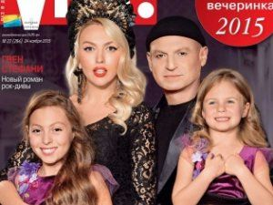
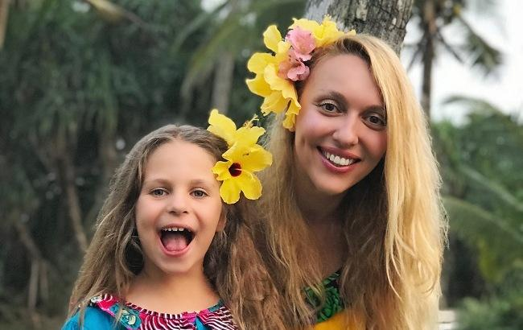
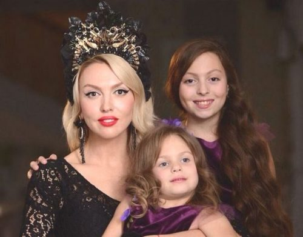

Личная жизнь
Певица любит эпатировать публику только на экране. Но личная жизнь Ольги Поляковой, если сравнивать ее с такой же жизнью других представительниц шоу-бизнеса, скучна и пресна. Никаких скандалов или разоблачений журналистам сделать не удалось.
Полякова замужем за успешным бизнесменом по имени Вадим. Для мужа артистки это второй брак, в первом детей не осталось. Супруги познакомились на выступлении артистки, которое Ольга давала на дне рождения Вадима. Как утверждает муж, он влюбился в девушку с первого взгляда. Первое время после начала совместной жизни молодожены выясняли отношения. Полякова долго не могла смирить пылкий нрав, пока не поняла, что битьем посуды ничего хорошего не добьешься. Со временем страсти сменились взаимопониманием. У пары родились две дочери. В 2005-ом на свет появилась Маша, в 2011-ом – Алиса.
Певица регулярно пополняет «Инстаграм» семейными фото с дочерьми, активно общается с фолловерами, размещая посты, посвященные творческим достижением. У Поляковой есть официальный YouTube-канал.
